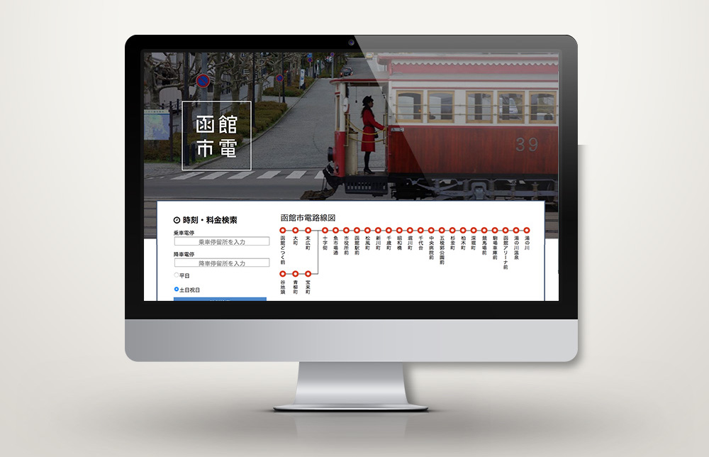

< 戻る
函館市電サイトのリデザイン
制作期間
2017.6.1〜2017.7.28
担当範囲
既存の市電サイトを分析,ワイヤフレーム作成,コーディング,評価実験
使用したツール
html,css,sass(さわり程度),Illustrator
メンバー
個人
URL
分析したサイト 作成したサイトコンセプト
マルチカラムをワンカラムへ
背景
3年次ヒューマンインタフェースという授業で作成したwebページ。既存の函館市電サイトを分析し、webサイトをリデザインするという目的で作成した。
作成したもの
既存のサイトを分析し、ユーザーが必要とする情報に優劣をつけマルチカラムをシングルカラムに変更したwebサイト
アピールポイント
分析に基づいて、問題を解決するようなサイトを作成できた点。ユーザーテストを行い計算に基づいた結果を出せた点。
Process
1.WEBサイトの構造の可視化し問題点を分析
ぺージ遷移や階層を可視化した。リンク先の重複や、市電利用者と事業関係者に向けたリンクが混在しているという問題を発見した。
2.改善案の提案、ワイヤフレームの作成
メインターゲットを市電利用者に絞り、市電利用者の必要な情報順にワンカラムでのデザインで作成したワイヤフレームを作成した。
3.ワイヤフレームを元にコーディング
HTML5、CSS3、JavaScriptを使用してWEBサイトのコーディングを行いました。コーディングをしながらUIの改善も行いました。
4.評価実験の結果
被験者7名に既存の函館市電サイトとリデザインした函館市電サイトを対象に「乗車時間と乗車料金の検索までの時間」と「市電の乗り方を見つける時間」を計測し、平均時間を出した。この実験について有意水準5%において両側検定でt検定（一対の標本による平均の検定）を適用したところ、t（19）=4.14、p=0.0005であり、平均値の差に有意差が観測された。その結果、既存の函館市電サイトと比較し、情報を見つけ出す時間を短縮することができた。